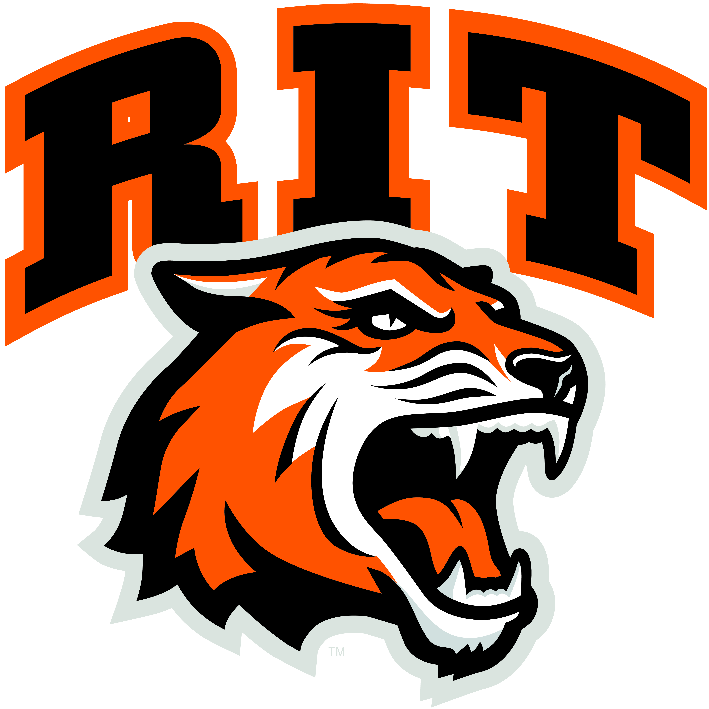
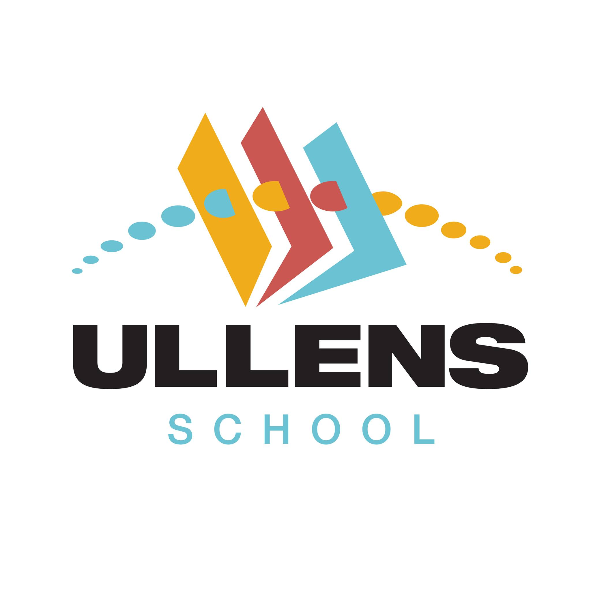
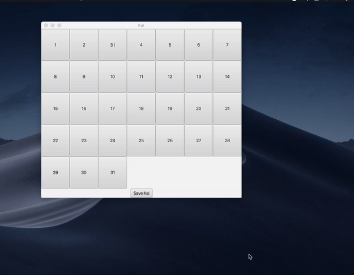
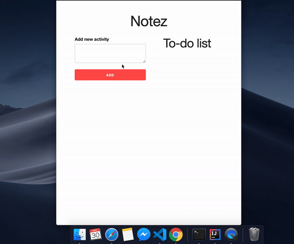
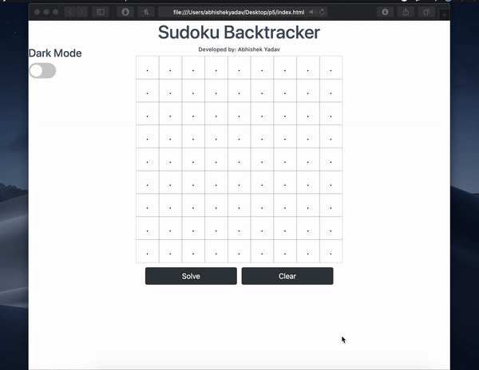
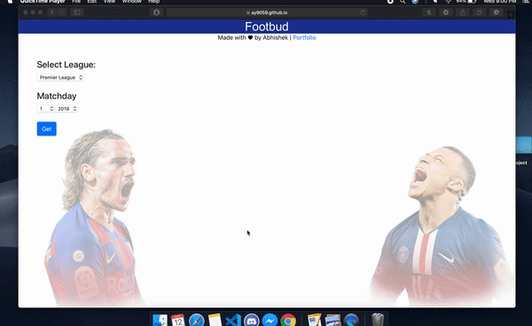

Abhishek Yadav
Hello there! My name is Abhishek Yadav, a 2nd year Computer science student at Rochester Institute of Technology. I am originally a Nepalese who was born in Russia, moved back to Nepal for schooling and finally came to USA to pursue my bachelor's degree (crazy, I know).
I have always been fascinated by computers. Ever since I got my first desktop-pc in 2005, I spent hours on end just exploring the internet regarding computers. It wasn't until 2017 however, when I finally got the chance to build one for myself!
I have keen interest in programming, especially when it comes to writing scripts to automate tasks (godbless python). During my spare-time, when i'm not gaming, I try to familiarize myself with various programming concepts and frameworks, especially those based off of JavaScript. Investing is another one of my hobbies and I also consider myself to be an avid stock trader on Robinhood. I mainly invest in tech companies that I have faith in. Over the years, I was also able to learn programming languages such as C, Java, JavaScript & Python. It took me a while to realize the fact that It isn't about learning new languages, instead it is more about learning data structures and algorithms. For this reason I have started doing 1 Leetcode problem a day. Currently, I have solved about 100 problems on leetcode.
Education
Rochester Institute of Technology (2018-2023)
I enrolled to RIT during August of 2018, and ever since, I have been forced to step outside my comfort zone. This was a challenge at first but I soon realized the fact that steping outside of your comfort zone is the same as 'learning' and for this reason, I learned to embrace it.
Since the Computer Science at RIT is a 5-year program, my expected graduation date is during May of 2023. And as much as I want to graduate quickly, I must say that I will miss it someday.
Ullens School IB, Nepal(2016-2018)
At Ullens School, I decided to take the IB course which was said to prepare its students for the so called 'college life'. It was also during my years at Ullens when I finally made up my mind regarding what I wanted to pursue. I was fortunate enough to have been exposed to variety of courses at Ullens. This gave me a brief Idea of what the careers in each respective field would be like.
I would often found myself imagining what I would be like as an accountant, as an engineer or as a developer. Although computer science wasn't a part of the curriculum during my IB diploma programme, I still took online courses on Coursera and edX just to be prepared for college. And I must say, I am glad I did.
It's no secret, the IB diploma is rigorous and looking back, I would definitely say that I am glad I put in the hardwork that was necessary.
Some of my works
Pathfinder AI (2019) 
My friend and I worked on implementing A star search algorithm for a game of connect the dots. This is a two player game where one player tries blue dots from top to bottom and the other player tries to connect dots from left to right. We coded an AI that computes the shortest distance each time player two makes a move and connects line accordingly.
We worked on this project beginning from October 2019 and we managed to complete it by December. This project was frustrating as well as a delightful experience for me. Prior to this project, I only had experience in breadth-first and depth-first searches.
At the end of the day, all those sleepless nights and resolving merge conflicts paid off!
Kal (2019)

Kal is a simple GUI based Calendar application that allows the user to add, remove and modify appointments. My main learning outcome from doing this project was learning about the MVC model. It was simply amazing seeing how the implementation of the plain text user interface (PTUI for short) can be effortlessly translated into its Graphical counterpart. Doing this project gave me confidence that all of the PTUI programs that I wrote can be translated in a similar fashion.
I worked on this project for a total of two days. However, these two days were enough for me to learn about the concepts of event listeners, not to mention the JavaFX library. All in all, it was a fun experience and I hope to make it better someday, perhaps with a more appealing user elements.
Twitter Scraper (2020)

Twitter Scraper is a Python based twitter scraping program which prompts the user for a twitter username and if the username exists, it fetches all of the tweets/re-tweets and images uploaded by that user. To make this I had to first register a developer's account to use the twitter API. The actual program uses tweepy library and wget to fetch the images.
My main motivation for making this was to make tweet searching easier and I am more than satisfied from the outcome of this project.
Notez (2020)

Notez is a JavaScript based web application that allows the user to locally store their notes. To ensure that the notes are non-volatile, this program appends each note to an array and then stores it in the localStorage. Each time the webpage is reloaded, this program uses JSON to stringify the array and display its contents on the page.
My main objective with this project was to get an idea about the document object model and also to put my JavaScript skills to good use.
Sudoku Backtracker (2020)

Sudoku Backtracker is a JavaScript based web application that provides a user-friendly interface to solve even the hardest 9x9 sudoku puzzles in mere seconds. My main goal for this project was to get an Idea about backtracking whilst also putting my newly learned jQuery skills to practice.
Please click here for a live demo of this program.
Footbud(2020)

Footbudd is a web app built using ReactJS. It allows the user to fetch real time as well as past scorelines, fixtures and league table for Football(Soccer). It supports the 5 major leagues which are: English premier league, Bundesliga, Serie A, Ligue 1 and Liga Santander. This web app makes use of a RESTful API by the name of football-data dot org.
My main objective with this project was to use my ReactJS skills to build something that I am genuinely passionate about.
Plans for the future
My main aim is to be a fullstack developer, I enjoy coming up with unique ways to solve problems and I consider design to be one of my strong suits. And as of right now, I believe I am on the right track and I am mentally preparing myself for any obstacles that I might have to overcome eventually.
In the near future, I would like to work for a company where I can bond on a deeper level with my fellow co-workers. Having a close connection with colleagues of any sort greatly improves my productivity.